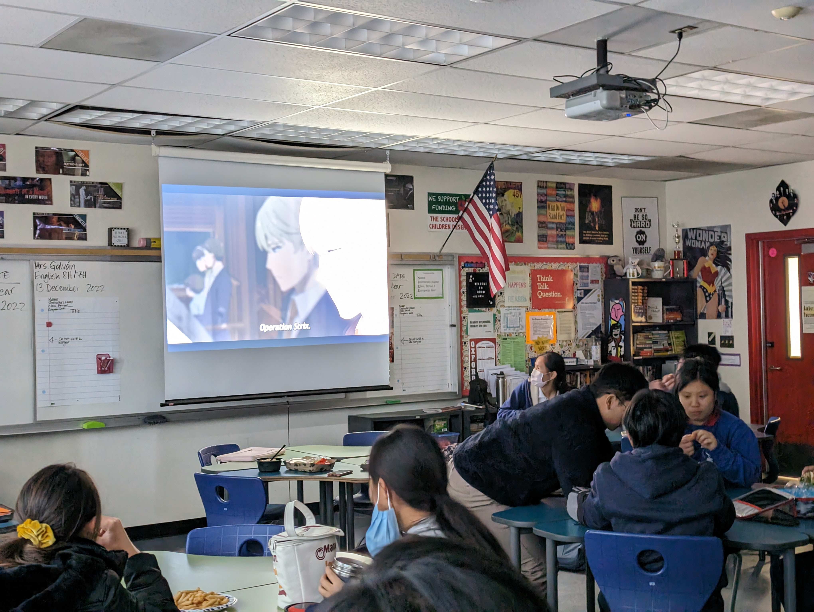

Welcome to the OAJC website.
Explore what our club has done in the past year alone. From Tokyo to Okinawa, our club focuses on Japanese culture and language.
Come Wednesdays during lunch @ Room 404
OK but who are we exactly?
Our mission is to spread Japanese culture through fun activities planned by our board every week.
Just look to the right to rewatch some of our favorite memories.


Buddying With Japanese Students
In November, a few lucky members had the privilege to serve as student ambassadors for the Japanese students from Fujimigaoka High School for Girls. For an entire day, the visiting students accompanied their ambassadors to their classes and clubs. During the welcoming assembly, te girls from FHS showcased their talents in martial arts, dances, baton twirling with their captivating performances in addition to the 10+ booths they set up featuring traditional and festive activities popular in Japan. Lifelong friendships were formed, and both parties gained insight on school life in foreign countries.

Servathon “Cultural Crafts”
In collaboration with International Club, volunteers were able to serve both their local and global communities. We had three booths in total; all were able to run thanks to donations from OAJC and OAIC board members, Mrs. Stephan, and PTSA parents. For Long Beach Rescue Mission, an organization whose mission is to support the homeless community, we were able to donate 200+ furikake onigiris made in the span of 3 hours. For Children’s Peace Monument in Hiroshima, Japan, to commemorate the lives lost by atomic bomb, we began our mission to fold 1000 paper cranes which we will continue throughout the year. (Right now, we are at 453/1000.) Finally, we continued a crocheting project first started by alumni to complete a blanket for a local senior center. Thank you to everyon who came out, and we can’t wait to serve our communities again next year!

Buddying With Japanese Students
In November, a few lucky members had the privilege to serve as student ambassadors for the Japanese students from Fujimigaoka High School for Girls. For an entire day, the visiting students accompanied their ambassadors to their classes and clubs. During the welcoming assembly, te girls from FHS showcased their talents in martial arts, dances, baton twirling with their captivating performances in addition to the 10+ booths they set up featuring traditional and festive activities popular in Japan. Lifelong friendships were formed, and both parties gained insight on school life in foreign countries.
Gudetama thinks you should donate to help the Japanese Club continue in future years. So feel free to stop by Room 404 on Wednesdays during lunch.